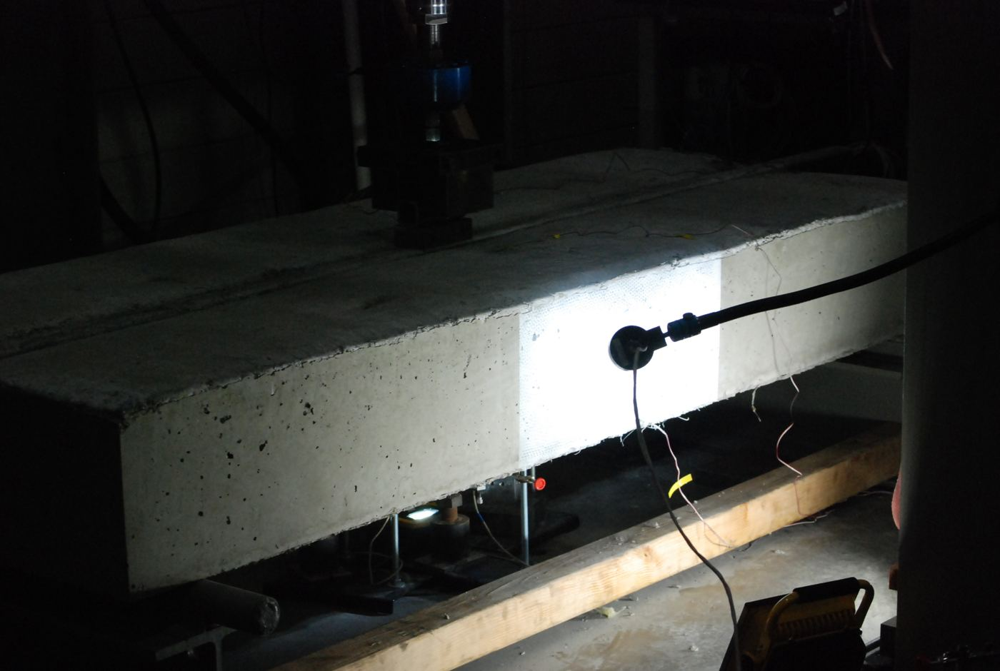
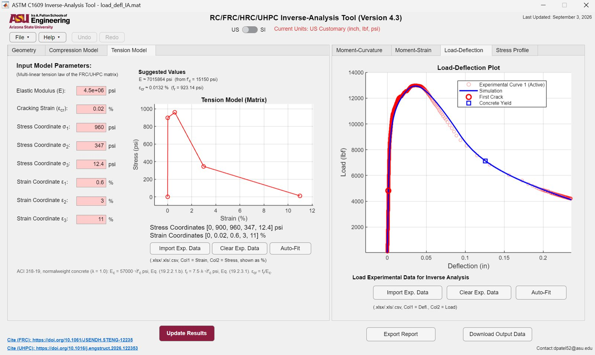

Hybrid reinforced concrete
Fibers and rebar acting together. Tensile load sharing between the fiber matrix and the bars, efficiency at low reinforcement ratios, flexural fatigue, and serviceability based design.
Structural engineer / PhD student / Arizona State University
Research engineer and PhD student at Arizona State University. I work on the design, testing and characterization of concrete composites, and I build the software that turns flexural test data into material models and design checks.
Latest release
HRC Designer 4.3, 2026-09-03
Latest journal paper
Limit-state based design of hybrid reinforced UHPC flexural beams, Engineering Structures, 2026
Latest conference paper
An interactive inverse-analysis and design tool for reinforced UHPC beams, 4th International Interactive Symposium on UHPC, 2026
Concrete composites, from the bending test to the design equation.
Fibers and rebar acting together. Tensile load sharing between the fiber matrix and the bars, efficiency at low reinforcement ratios, flexural fatigue, and serviceability based design.
Back-calculating the tensile stress strain law of FRC and UHPC from ASTM C1609 and EN 14651 beam tests, so the material model comes from the test rather than a handbook.
Parametric, closed form limit state design of reinforced UHPC beams, connection elements for precast bridge decks, and field implementation on rural bridge decks.
Mechanical response of segments with steel and synthetic macro fibers, validation testing, and statistical process control of residual strength QC data.
Laminate theory and damage modeling as a design framework, with software for mechanical characterization and flexural design.
Modeling layered, multi material printed flexural members toward efficient structural design and optimization.

Tools I write so that the models in the papers get used.

Free desktop software for the analysis and design of fiber reinforced concrete, hybrid reinforced concrete, UHPC and textile reinforced concrete sections, with built-in inverse analysis of flexural test data. Developed at Arizona State University.
parametric-uhpc
PYTHON / PYPI / MITParametric, closed form inelastic simulation of UHPC and hybrid reinforced concrete flexural members with limit state analysis. Moment curvature, load deflection and internal force distributions, with optional experimental overrides from Excel. Companion to the Engineering Structures 2026 paper. pip install parametric-uhpc
FRP-FRC-Flexure
PYTHON / MITClosed form flexural response of FRC and UHPC sections reinforced with steel or FRP bars, with an optional externally bonded FRP skin that activates after the section is already strained. Fourteen zones, each solved once symbolically, so the response follows by substitution rather than iteration.
Structural Engineering Toolbox
WEB / BETAASCE 7-16 Chapter 28 wind load calculator for low-rise buildings. Zone pressures for both load cases from wind speed, geometry, roof slope and exposure.
Peer reviewed journal articles and conference papers, newest first. Every title links to the publisher record.
Engineering Structures 357, 122353
Patel DD, Pleesudjai C, Neithalath N, Mobasher B
Materials and Structures 59(3), 167
Tripathi A, Patel D, Mobasher B, Neithalath N
Construction and Building Materials 506, 144835
Pleesudjai C, Patel D, Araujo DL, Oliveira CA, Toledo Filho RD, Mobasher B
Fourth International Interactive Symposium on UHPC
Mobasher B, Patel D, Pleesudjai C
Fourth International Interactive Symposium on UHPC
Mobasher B, Patel D, Pleesudjai C, Tripathi A, Jones R, Camp J, Neithalath N
RILEM Spring Convention 2026, RILEM Bookseries, 625 to 632
Patel D, Pleesudjai C, Mobasher B
RILEM Spring Convention 2026, RILEM Bookseries, 249 to 256
Pleesudjai C, Patel D, Ghiassi B, Mobasher B
Engineering Structures 345, 121539
Silva Junior IB, Monteiro VMA, Patel DD, Gaspar CMR, Mobasher B, de Andrade Silva F
Structural Concrete 26(5), 6019 to 6040
Patel D, Pleesudjai C, Bakhshi M, Nasri V, Mobasher B
Materials and Structures 58(6), 218
Pleesudjai C, Oliveira CAS, Araujo DL, Patel D, de Andrade MAS, Toledo Filho R, Mobasher B
IABSE Congress Ghent 2025, The Essence of Structural Engineering for Society
Patel D, Mobasher B, Caggiano A, Jativa F, Lantsoght E
ACI Materials Journal 121(2), 127 to 139
Pleesudjai C, Patel D, Williams Gaona KA, Bakhshi M, Nasri V, Mobasher B
RILEM-fib International Symposium on Fibre Reinforced Concrete, RILEM Bookseries, 276 to 283
Patel D, Tripathi A, Pleesudjai C, Neithalath N, Mobasher B
Journal of Structural Engineering 149(12), 04023188
Pleesudjai C, Patel DD, Mobasher B
Cement and Concrete Composites 144, 105303
Patel D, Pleesudjai C, Bui V, Pridemore P, Schaef S, Mobasher B
Third International Interactive Symposium on Ultra-High Performance Concrete
Pleesudjai C, Patel D, Neithalath N, Mobasher B
RILEM-fib International Symposium on Fibre Reinforced Concrete, RILEM Bookseries, 820 to 830
Patel D, Pleesudjai C, Yao Y, Schaef S, Mobasher B
RILEM-fib International Symposium on Fibre Reinforced Concrete, RILEM Bookseries, 815 to 826
Pleesudjai C, Patel D, Bakhshi M, Nasri V, Mobasher B
Northwest Phase II Extension Light Rail Transit, Phoenix. Lead researcher on the project. Read the ENR article
Questions about the software, the models behind it, or a test program you want characterized. Email is the fastest route.
dpatel52@asu.edu